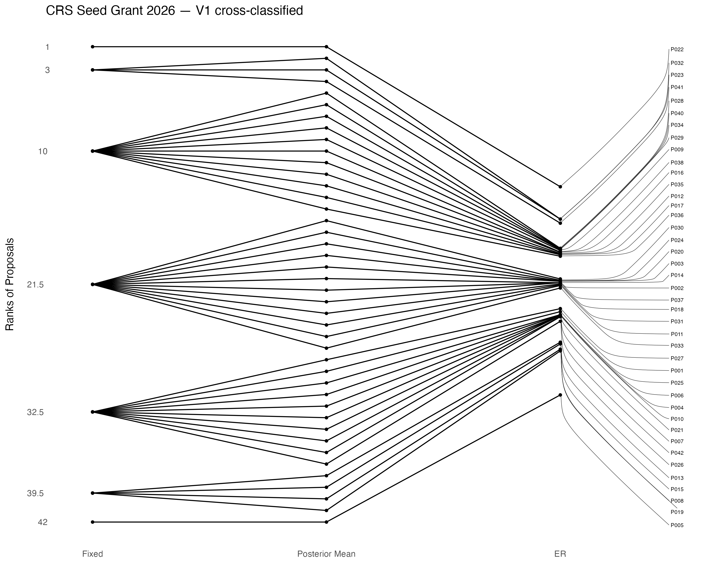
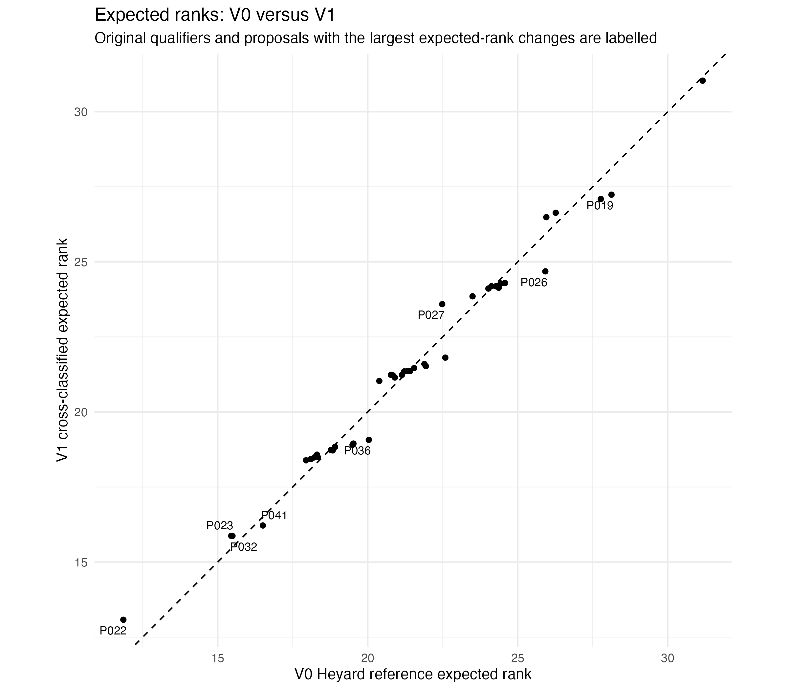
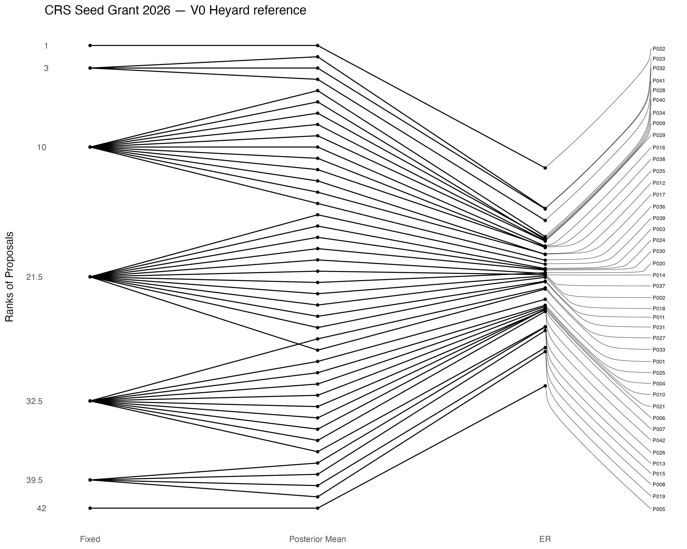

Bayesian Ranking and Graph-Based Review Design under Sparse Evaluation Data
A Case Study of the CRS Seed Grants 2026
Abstract
1 Introduction
1.1 Grant evaluation under limited information
Grant peer review converts a limited number of expert judgments into decisions that can have substantial consequences for applicants. The challenge is not only disagreement between reviewers, but also the risk of overinterpreting small score differences when each proposal is assessed by only a few reviewers. Kaplan et al. show directly that finer scoring precision requires increasingly many independent reviewers, and illustrate how rankings can vary strongly when only a small number of evaluations are available (Kaplan et al. 2008).
This uncertainty becomes particularly important when proposals are close in score or close to a decision boundary. In a retrospective analysis of Australian grant panels, Graves et al. found substantial instability in funding status after accounting for variability among panel members’ scores (Graves et al. 2011). Jayasinghe, Marsh and Bond reported low single-rater reliability in Australian Research Council grant assessments and used a multilevel cross-classified model to separate proposal- and assessor-related sources of variation (Jayasinghe et al. 2003). Heyard et al. similarly motivate Bayesian ranking by low inter-rater reliability and by the difficulty of distinguishing proposals of similar quality near a funding line (Heyard et al. 2022). These findings do not imply that peer review is uninformative; rather, they motivate distinguishing an observed numerical ordering from the strength of evidence supporting that ordering.
The present project studies this distinction in a deliberately small evaluation setting. With only two reviews per proposal, a method that reports a single rank without its uncertainty can appear more decisive than the available information warrants. The aim is therefore to model proposal and reviewer variation explicitly, quantify posterior uncertainty in the resulting ranks, and later ask whether the structure of the review design itself can indicate where additional review effort would be most informative.
1.2 CRS Seed Grant evaluation 2026
The Center for Reproducible Science and Research Synthesis (CRS) at the University of Zurich (UZH) works to advance scientific methods and practices that support trustworthy and reproducible research. Its activities include research on reproducibility, research synthesis, and meta-research (Center for Reproducible Science and Research Synthesis 2026).
In 2026, the CRS launched its first Seed Grant call to support early-stage projects and initiatives in research synthesis, meta-research, and related fields (Center for Reproducible Science and Research Synthesis 2026). The evaluation round included 42 proposals assessed by a panel of nine reviewers. Each proposal received exactly two independent reviews, resulting in 84 completed review records.
Reviewers evaluated each proposal on four supporting criteria: scientific quality and relevance for the call, prospects for community-building, potential for scaling, and commitment to scientific rigor. After filling out these scores, each reviewer assigned a separate holistic overall grade, which was the score used in the qualification procedure. The call indicated that approximately six projects could be funded (Center for Reproducible Science and Research Synthesis 2026). In the observed evaluation round, four proposals met the qualification rule and were therefore selected for funding.
1.3 Original qualification procedure
Funding eligibility was determined from the two holistic overall grades assigned to each proposal using a predefined qualification rule. The procedure therefore operated as a score-based threshold rather than as a complete ranking of all proposals. The rule and its reconstruction from the evaluation data are described in Section 2.3.
1.4 Motivation for Bayesian ranking
The original CRS procedure was transparent and easy to apply, but it did not quantify uncertainty around the observed overall grades. In particular, two proposals with similar score pairs can receive a definite relative ordering even when the evidence that one is better than the other is weak. With only two reviews per proposal, the observed scores also reflect both proposal-related variation and differences in reviewer scoring behaviour.
Bayesian hierarchical modelling provides a way to separate these sources of variation probabilistically. Heyard et al. model latent proposal effects together with assessor-related effects and rank proposals using the posterior distribution of the proposal effects rather than the raw score averages alone (Heyard et al. 2022). Their expected-rank approach is designed to retain information about uncertainty instead of treating an estimated ordering as known with certainty.
For the CRS data, the Bayesian analysis is therefore used as a decision-support and uncertainty-quantification tool rather than as a replacement rule that mechanically determines funding. The main questions are whether the broad ordering produced by the original procedure persists after accounting for reviewer-associated scoring tendencies, how uncertain the resulting ranks are, and whether apparently different exact ranks correspond to meaningful posterior evidence.
1.5 Research questions
1.5.1 Research Question 1
What posterior ranking is obtained from a hierarchical Bayesian model of the overall grades that accounts for reviewer-specific scoring tendencies, and how uncertain are the resulting ranks?
1.5.2 Research Question 2
How does the main Bayesian ranking model compare with the original ranking and qualification procedure based on the two overall grades per proposal?
1.5.3 Research Question 3
Is the selected main Bayesian model sufficiently robust and adequate under model validation and sensitivity analysis?
1.5.4 Research Question 4
How closely do the four supporting criterion scores correspond to the holistic overall grade, and would an equal-weight average of the criteria have produced a materially different proposal ordering?
1.5.5 Research Question 5
Can the sparse reviewer–proposal design be used to identify where additional review effort may be most informative?
1.6 Scope and intended contribution
1.7 Structure of the report
2 Evaluation design and descriptive analysis
2.1 Evaluation process and analytical data
The anonymized analytical dataset contains 84 completed reviews of 42 proposals by nine reviewers. Each proposal received exactly two independent reviews. Reviewer workloads were unequal because assignments were based on expertise and availability.
Each review contains four supporting criterion scores and a separate holistic overall grade. All scores use an integer scale from 1 to 5, where higher values indicate a more favourable evaluation. The Bayesian models use the holistic overall grade as their outcome. The four criterion scores are retained for a separate descriptive analysis of their relationship with the overall grade.
2.2 Reviewer–proposal assignment
The reviewer–proposal design is sparse and unbalanced. Each proposal was reviewed twice, whereas reviewers assessed different numbers of proposals. Assignments were not random but depended on expertise and availability.
Consequently, estimated reviewer effects should be interpreted as scoring tendencies rather than direct evidence of reviewer bias. Differences attributed to reviewers may partly reflect differences in the types of proposals assigned to them.
2.3 Reconstruction of the original procedure
According to the published CRS Seed Grant results (Center for Reproducible Science 2026), funding was available for proposals that received the highest overall grade from at least one reviewer and no grade below the second-highest category. Since the overall grade was scored on a scale from 1 to 5, this means that a proposal qualified if it received at least one grade of 5 and its second grade was at least 4. With exactly two reviews per proposal, the qualifying score combinations were therefore (5,5), (5,4), and (4,5). Equivalently, a proposal qualified if its mean overall grade was at least 4.5.
This procedure should be interpreted as a score-based qualification threshold rather than as a fixed top-four selection rule. Four proposals happened to satisfy the threshold in the 2026 evaluation round. Since the call indicated that approximately six projects could be funded, the available funding capacity was not binding and no additional prioritization among qualified proposals was required.
2.4 Reviewer scoring patterns and agreement
2.5 Supporting criteria and holistic overall grade
2.6 Proposal-level criterion average versus overall-grade average
3 Bayesian ranking framework
3.2 V0: Heyard reference model
The first fitted model, denoted V0, reproduces the continuous homogeneous-variance specification of Heyard et al. as the methodological reference model (Heyard et al. 2022). Let \(r=1,\ldots,84\) index completed reviews, let \(p(r)\) denote the proposal reviewed in record \(r\), and let \(a(r)\) denote the reviewer. The observed holistic overall grade is \(Y_r\), and \(\bar{Y}\) denotes the observed mean overall grade across all reviews.
The model used in the analysis is
\[ Y_r \mid \theta,\lambda \sim \mathcal{N}\!\left( \bar{Y}+\theta_{p(r)}+\lambda_{p(r),a(r)},\,\sigma^2 \right), \]
with proposal effects
\[ \theta_i \sim \mathcal{N}(0,\tau_\theta^2), \]
and proposal-reviewer assessment effects
\[ \lambda_{ij}\sim\mathcal{N}(\nu_j,\tau_\lambda^2), \qquad \nu_j\sim\mathcal{N}(0,0.5^2). \]
Here \(\theta_i\) is the latent proposal effect used for ranking. The parameter \(\nu_j\) represents the persistent scoring tendency of reviewer \(j\), whereas \(\lambda_{ij}-\nu_j\) permits an additional assessment-specific deviation for reviewer \(j\) on proposal \(i\). The residual term, with standard deviation \(\sigma\), captures variation not explained by these latent components. This is the same basic interpretation given by Heyard et al., where assessor-specific means allow for systematically stricter or more generous scoring habits (Heyard et al. 2022).
The JAGS implementation assigns
\[ \sigma,\tau_\theta,\tau_\lambda \sim \operatorname{Uniform}(0,2), \]
with the lower endpoint implemented numerically as \(10^{-6}\). V0 is retained as a reference rather than assumed to be the best representation of the CRS data. In this dataset, every observed proposal-reviewer combination occurs only once, so the additional assessment-specific latent term is weakly informed at the individual edge level. This motivates comparison with the more parsimonious V1 specification below.
3.3 V1: CRS cross-classified model
The CRS-specific model V1 removes the proposal-reviewer-specific latent assessment term and retains one persistent proposal effect and one persistent reviewer effect. For review \(r\),
\[ Y_r \sim \mathcal{N}\!\left( \bar{Y}+\theta_{p(r)}+b_{a(r)},\,\sigma^2 \right), \]
where
\[ \theta_i\sim\mathcal{N}(0,\tau_\theta^2), \qquad b_j\sim\mathcal{N}(0,\tau_b^2). \]
Equivalently,
\[ Y_r=\bar{Y}+\theta_{p(r)}+b_{a(r)}+\varepsilon_r, \qquad \varepsilon_r\sim\mathcal{N}(0,\sigma^2). \]
The proposal effect \(\theta_i\) remains the latent quantity used for ranking. The reviewer effect \(b_j\) is shared across every proposal assessed by reviewer \(j\) and represents a reviewer-associated scoring tendency. It should not be interpreted as a causal measure of reviewer bias: reviewer assignments were based on expertise and availability rather than random allocation, so estimated reviewer differences can also reflect differences in the proposals assigned to each reviewer.
V1 is cross-classified because each review is associated with both a proposal and a reviewer. Reviewers assess multiple proposals, while each proposal is assessed by multiple reviewers, so neither grouping is nested within the other. Jayasinghe et al. describe exactly this structural issue for grant peer review: when some assessors review multiple proposals and proposals receive ratings from multiple assessors, assessor and proposal effects are crossed rather than nested, and ignoring those dependencies can lead to model misspecification (Jayasinghe et al. 2003). Their random-intercept formulation contains separate assessor and proposal components, closely paralleling the two crossed random effects in V1. The CRS model omits their additional field-of-study level and observed assessor/researcher covariates because these are not available in the anonymized CRS dataset.
The crossing is highly incomplete in the CRS data. There are \(42\times9=378\) possible proposal-reviewer combinations, but only 84 observed reviews. Unequal reviewer workloads are not in themselves incompatible with a cross-classified multilevel model; Jayasinghe et al. explicitly note that such models can accommodate unbalanced review counts (Jayasinghe et al. 2003). The more important limitation for interpretation is that the CRS assignments were not randomized.
As in V0, the scale parameters use
\[ \sigma,\tau_\theta,\tau_b \sim \operatorname{Uniform}(0,2). \]
V1 is treated as the provisional main model because it represents the recurring proposal and reviewer structure directly while avoiding a separate latent effect for every one-off proposal-reviewer assessment. Its adequacy is not assumed from parsimony alone; Chapter 5 therefore assesses its variance structure, posterior predictive behaviour and prior sensitivity before it is used as the basis for the review-design extension.
3.4 Partial pooling and variance components
Both V0 and V1 are hierarchical models and therefore use partial pooling. In V1, a proposal’s latent effect is not estimated from its two observed reviews alone. Instead, the estimate also reflects the amount of variation between proposals observed across the full dataset. The prior \(\theta_i\sim\mathcal{N}(0,\tau_\theta^2)\) therefore pulls proposal effects toward the overall proposal mean, with the strength of this shrinkage depending on the estimated between-proposal variance \(\tau_\theta^2\). The same principle applies to reviewer effects through \(b_j\sim\mathcal{N}(0,\tau_b^2)\), so estimates of reviewer-specific scoring tendencies are informed both by the reviews assigned to that reviewer and by the overall amount of variation between reviewers.
For V1, the marginal variance of an observed overall grade under the model is
\[ \operatorname{Var}(Y_r) = \tau_\theta^2+\tau_b^2+\sigma^2. \]
The three components correspond respectively to between-proposal variation, between-reviewer variation in scoring tendency, and remaining review-level variation.
Jayasinghe et al. define the intraproposal correlation in a cross-classified grant-review model as the correlation between two ratings of the same proposal by different assessors (Jayasinghe et al. 2003). In V1 there is no additional field-of-study effect, so the corresponding proposal-level intraclass correlation is
\[ \rho_{\mathrm{proposal}} = \frac{\tau_\theta^2} {\tau_\theta^2+\tau_b^2+\sigma^2}. \]
This quantity is also the model-implied correlation between two V1 ratings of the same proposal made by different reviewers. By the same covariance argument, two ratings made by the same reviewer for different proposals have model-implied correlation
\[ \rho_{\mathrm{reviewer}} = \frac{\tau_b^2} {\tau_\theta^2+\tau_b^2+\sigma^2}. \]
The second quantity is useful as a reviewer-clustering summary, but it is not the same object as the intraproposal reliability measure emphasized by Jayasinghe et al. Chapter 5 therefore reports the posterior distributions of both variance shares while keeping their interpretations distinct. This is particularly relevant in the CRS setting because each proposal has only two reviews whereas every reviewer contributes repeated ratings.
3.5 Priors, assumptions and interpretation
The two fitted models share several assumptions. First, conditional on their latent effects, overall grades are modelled with a common Gaussian residual variance. Second, proposal effects are exchangeable around zero. V1 additionally treats reviewer effects as exchangeable around zero. Third, \(\bar{Y}\) is fixed at the observed overall mean rather than estimated as an additional intercept in the JAGS models.
The scale priors are bounded uniform distributions on \((0,2)\), matching the reference implementation used for V0 and retained in V1 to make the model comparison interpretable. V0 additionally uses \(\nu_j\sim\mathcal{N}(0,0.5^2)\) for reviewer-specific mean tendencies. Because the dataset is small and the variance components govern the degree of partial pooling, the dependence of the V1 results on these scale priors is examined explicitly in the sensitivity analysis in Chapter 5.
The non-random assignment mechanism described in Sections 2.2 and 3.3 limits the interpretation of the reviewer effects. Cross-classified multilevel modelling can accommodate repeated reviewers and unequal review counts (Jayasinghe et al. 2003), but it does not remove the confounding between reviewer-associated scoring tendencies and differences in the proposals assigned to them. The reviewer effects are therefore interpreted as descriptive reviewer-associated tendencies rather than causal measures of reviewer bias.
The consequences of the incomplete proposal–reviewer assignment structure for estimability and statistical information are considered more formally in the graph-based analysis in Chapter 6.
3.6 Treatment of the 1–5 score scale
The holistic CRS overall grade is an ordered integer score from 1 to 5, but V0 and V1 treat it as approximately continuous and Gaussian. This implies that adjacent score categories are treated as equally spaced and that the latent Gaussian sampling distribution is not itself bounded to the interval \([1,5]\).
This choice follows the continuous reference formulation of Heyard et al., who considered both continuous and ordinal Bayesian ranking models for bounded grant scores (Heyard et al. 2022). In their simulation study, the simple normal-outcome model with homogeneous residual variance performed competitively despite its simpler specification, although the suitability of that approximation is context dependent.
For the CRS data, the Gaussian formulation is retained initially because it gives a transparent model for proposal and reviewer effects and supports the later linear-algebraic review-design analysis. The approximation is nevertheless testable. The posterior predictive assessment in Chapter 5 will examine the replicated score distribution, including the frequency with which the Gaussian model generates values below 1 or above 5. A full ordinal model is therefore not introduced solely because the observed scale is ordinal; it remains a possible extension if the validation results indicate that the continuous approximation is inadequate.
3.7 Posterior ranking quantities
The ranking is based on the posterior distribution of the proposal effects \(\theta_1,\ldots,\theta_{42}\) rather than directly on the observed score averages. For posterior draw \(s\), the rank of proposal \(i\) is
\[ R_i^{(s)} = 1+\sum_{k\neq i} \mathbb{1}_{\{\theta_k^{(s)}>\theta_i^{(s)}\}}, \]
where \(\mathbb{1}_{\{\cdot\}}\) denotes the indicator function, equal to 1 when the condition in the subscript is satisfied and 0 otherwise. The sum therefore counts how many other proposals have a larger latent proposal effect than proposal \(i\) in posterior draw \(s\). Consequently, rank 1 corresponds to the proposal with the largest proposal effect. The posterior mean of this rank distribution is the expected rank,
\[ ER_i = \operatorname{E}\!\left[R_i\mid Y\right]. \]
Using the definition of \(R_i\), this can equivalently be written as
\[ ER_i = 1+\sum_{k\neq i} \mathbb{P}(\theta_k>\theta_i\mid Y). \]
Thus, the expected rank of proposal \(i\) can be interpreted as 1 plus the sum of the posterior probabilities that each competing proposal has a larger latent proposal effect. In practice, \(ER_i\) is estimated from the MCMC output by computing \(R_i^{(s)}\) for each posterior draw \(s\) and averaging these sampled ranks,
\[ ER_i \approx \frac{1}{S}\sum_{s=1}^{S}R_i^{(s)}, \]
where \(S\) denotes the number of posterior draws used for the calculation.
Expected rank is the central ranking quantity in Heyard et al. because it incorporates both the estimated differences between proposal effects and the uncertainty in their relative ordering (Heyard et al. 2022). With 42 proposals, the midpoint of the rank scale is \((42+1)/2=21.5\). When the posterior ordering of a proposal is highly uncertain, its expected rank can therefore move substantially away from its point rank and toward the middle of the rank scale.
The analysis reports three related but distinct ranking summaries. The raw-score rank orders proposals using their average overall grade across the two reviews. The posterior-mean rank orders proposals according to the posterior means of their latent effects \(\theta_i\). The expected rank, by contrast, averages each proposal’s rank over the full posterior distribution and therefore accounts directly for uncertainty in the relative ordering. Posterior quantiles of \(R_i\) are additionally used to construct rank-uncertainty intervals.
Pairwise posterior probabilities such as
\[ \mathbb{P}(\theta_i>\theta_k\mid Y) \]
provide a more direct comparison between two particular proposals. They are especially useful when different models produce different exact ranks even though the posterior evidence separating the two proposals is weak. This becomes particularly relevant in the V0–V1 comparison.
3.8 Posterior computation and diagnostics
Both models were fitted in JAGS from R. The V0 workflow uses the ERforResearch implementation with the explicit V0 JAGS model, while V1 uses a custom JAGS specification with one reviewer effect per reviewer. Each final fit used four chains, 10,000 adaptation iterations, 10,000 burn-in iterations and 50,000 sampling iterations per chain. The random seed was fixed at 20260727 for reproducibility.
The fitting scripts first validate the anonymized data structure and reconstruct the original CRS qualification indicator. They then save the fitted MCMC object and a parameter-summary CSV. Expected ranks and posterior-mean ranks are computed from the fitted posterior and saved separately. The comparison script does not refit either model: it reads the saved V0 and V1 fits and ranking tables, extracts posterior rank draws, computes rank-uncertainty summaries and pairwise probabilities, and writes the model-comparison tables.
Computational convergence is assessed using the potential scale reduction factor (PSRF) and effective sample size (ESS) reported by the saved fits. These diagnostics establish whether the MCMC computation appears stable; they do not by themselves establish that the statistical model is adequate for the data. Posterior predictive checks and prior sensitivity are therefore treated separately in Chapter 5.
4 Bayesian ranking results
4.1 V0 results
The V0 reference model produced a clear point ordering at the top of the posterior-mean ranking. Proposal P022, whose two overall grades average to 5.0, had posterior-mean rank 1 and expected rank 11.85. The three proposals with an average overall grade of 4.5 occupied the next three posterior-mean positions: P023 had rank 2 and expected rank 15.45, P032 rank 3 and expected rank 15.49, and P041 rank 4 and expected rank 16.50. These are exactly the four proposals that satisfied the original CRS qualification rule.
The difference between posterior-mean rank and expected rank is already informative. Although P022 is first when proposals are ordered by posterior mean \(\theta_i\), its expected rank is 11.85 rather than close to 1. The corresponding 90% posterior rank interval extends from rank 1 to rank 35. The three other originally qualified proposals have 90% intervals of 1–37 for P023, 1–37 for P032, and 2–38 for P041. Thus, the fitted model preserves a clear point ordering while simultaneously indicating that the data provide little precision about the exact ranks.
The MCMC diagnostics did not indicate a computational convergence problem. Across the monitored V0 parameters, the maximum PSRF was 1.0077 and the minimum effective sample size was 501. The weakest ESS occurred for \(\tau_\lambda\) (stored as tau_assessor). These diagnostics support using the posterior draws for comparison, while the breadth of the rank distributions remains a substantive feature of the inference rather than an obvious MCMC failure.
4.2 V1 results
The more parsimonious V1 model produced a very similar upper ordering. P022 remained at posterior-mean rank 1, with expected rank 13.08. P032 moved to posterior-mean rank 2 with expected rank 15.87, P023 moved to rank 3 with expected rank 15.87, and P041 remained rank 4 with expected rank 16.22. Again, the four proposals occupying the first four posterior-mean positions are exactly those that satisfied the original CRS qualification threshold.
Rank uncertainty remained large. The 90% posterior rank interval for P022 was 1–36; for P023 and P032 it was 1–37; and for P041 it was 1–38. The posterior-mean ordering should therefore not be read as evidence that these proposals are separated with comparable certainty to their integer rank labels. This distinction is central for interpreting V1 as an uncertainty-aware model rather than simply another deterministic ranking rule.
The relationship between the three ranking summaries is illustrated in Figure 1. In the figure, Fixed denotes the ranking obtained directly from the observed two-review average for each proposal, Posterior Mean denotes the ranking obtained by ordering proposals according to the posterior means of their latent effects \(\theta_i\), and ER denotes the posterior expected rank obtained by averaging each proposal’s rank across posterior draws. In all three cases, smaller rank values indicate better positions, with rank 1 corresponding to the highest-ranked proposal.

V1 also showed favourable MCMC diagnostics. Its maximum PSRF was 1.0017 and its minimum effective sample size was 1,627, both associated with \(\tau_\theta\) (stored as tau_proposal). All nine reviewer-effect 95% posterior intervals include zero in the saved V1 summary. This does not imply that reviewer variation is absent; it means that the dataset does not provide strong proposal-adjusted evidence for any single reviewer having a non-zero persistent effect. Reviewer effects are therefore described as reviewer-associated scoring tendencies and are examined further through the variance decomposition in Chapter 5.
4.3 Comparison with the original CRS procedure
The original CRS rule and the Bayesian models answer related but different questions. The CRS procedure applies the score-based qualification threshold described in Section 2.3 and does not require a complete ordering of all 42 proposals. By contrast, V0 and V1 estimate latent proposal effects for every proposal and quantify uncertainty in their relative ranks.
At the top of the point ranking, the methods agree strongly. P022, P023, P032 and P041 are the four proposals that qualified under the original rule, and the same four occupy the first four posterior-mean ranks under both V0 and V1. The Bayesian analysis therefore does not reveal a wholesale reversal of the original outcome. Instead, its main added information is about how uncertain the apparent ordering is.
That distinction matters because deterministic score summaries can conceal instability when proposals are difficult to separate. Graves et al. show that reviewer-score variability can translate into substantial rank and funding instability (Graves et al. 2011), while Heyard et al. use posterior rank uncertainty specifically to identify proposals whose quality is difficult to distinguish (Heyard et al. 2022). In the CRS data, the broad posterior rank intervals show that agreement about which proposals look strongest from the observed scores should not be confused with precise knowledge of their latent ranks.
The Bayesian analysis is therefore interpreted as complementary to the CRS qualification rule. It provides a probabilistic description of relative proposal quality and reviewer-associated variation; it does not retrospectively redefine the original threshold as a fixed top-four funding line.
4.4 Comparison of V0 and V1
The direct comparison shows that simplifying V0 to the cross-classified V1 model changes little about the substantive ranking. The Spearman correlation between the two posterior-mean rankings is 0.9951, and the Pearson correlation between expected ranks is 0.9916. Twenty-six of the 42 proposals change their exact posterior-mean rank, but the changes are small: the mean absolute change is 0.86 positions and the maximum is 3 positions. Thus, counting the number of proposals whose integer rank changes would substantially overstate the practical difference between the models.
The close agreement in expected ranks is also visible in Figure 2, where most proposals lie close to the identity line.

Although the two models therefore produce very similar rankings overall, small changes in exact integer ranks can still occur when two proposals are nearly indistinguishable. The P023–P032 comparison provides a clear example. Under V0, P023 has posterior-mean rank 2 and P032 rank 3; under V1, this ordering reverses. Yet the posterior pairwise probability is
\[ \mathbb{P}(\theta_{032}>\theta_{023}\mid Y)=0.498955 \]
under V0 and
\[ \mathbb{P}(\theta_{032}>\theta_{023}\mid Y)=0.500470 \]
under V1. Both probabilities are essentially one half. The rank swap therefore reflects an almost exact posterior tie rather than meaningful evidence that one model identifies a different second-best proposal. This is a concrete example of why an exact integer rank can appear more decisive than the posterior comparison that produced it.
Most importantly, V1 does not materially reduce rank uncertainty. The mean width of the 90% posterior rank interval is 36.50 positions under V0 and 36.74 under V1; the median width is 37 under both models. The large uncertainty therefore survives removal of V0’s proposal-reviewer-specific assessment layer. V1 has somewhat more favourable computational diagnostics and a simpler interpretation, while preserving essentially the same ranking conclusions.
This comparison supports using V1 as the provisional main model, but it does not by itself establish why rank uncertainty is so large. The sparse design–especially the fact that each proposal has only two reviews–is a plausible major source, consistent with the broader precision problem discussed by Kaplan et al. (Kaplan et al. 2008), but that explanation is investigated rather than assumed. The next step is therefore to validate V1 before using its posterior covariance structure in the review-design analysis.
5 Validation and sensitivity analysis of V1
5.1 Motivation
The close agreement between V0 and V1 shows that the simpler V1 specification preserves the main ranking conclusions, but this comparison alone does not establish that V1 is an adequate working model for the CRS data. The validation therefore focuses on a small number of checks that address different aspects of the model: computational behaviour, the estimated variance structure, posterior predictive adequacy, and sensitivity to the prior specification.
The aim is not to establish V1 as the true data-generating mechanism. Rather, the objective is to determine whether its main inferential conclusions are sufficiently stable and whether it reproduces important features of the observed grades well enough to justify its use in the subsequent analyses. This is particularly relevant because the graph-based review-design extension later uses the covariance structure implied by V1.
5.2 Computational diagnostics
Computational convergence was already summarized alongside the V1 ranking results in Chapter 4. The final V1 fit had a maximum PSRF of 1.0017 and a minimum effective sample size of 1,627, with the smallest ESS occurring for \(\tau_\theta\). These values do not indicate an important convergence problem.
Rather than repeating the numerical diagnostics in detail, this section supplements them with trace plots for the three V1 scale parameters \(\tau_\theta\), \(\tau_b\), and \(\sigma\). These plots provide a visual check that the four MCMC chains explore the same posterior region without persistent trends or obvious chain separation.
5.3 Variance decomposition and intraproposal correlation
The variance decomposition defined in Section 3.4 is evaluated from the posterior draws of \(\tau_\theta\), \(\tau_b\), and \(\sigma\). The objective is to determine how the model distributes variation between proposal effects, reviewer-associated scoring tendencies, and remaining review-level variation.
The proposal variance share is interpreted as the model-implied intraproposal correlation introduced in Section 3.4, following the cross-classified reliability interpretation of Jayasinghe et al. (Jayasinghe et al. 2003). The reviewer variance share is reported separately as a reviewer-clustering quantity rather than as a proposal-reliability measure.
5.4 Posterior predictive assessment
Posterior predictive checks are used to assess whether data generated from the fitted V1 model resemble important features of the observed CRS grades. For posterior draw \(s\), replicated grades are generated from the fitted sampling model using the corresponding posterior parameter values. The resulting replicated datasets are then compared with the observed data.
The checks focus on features that are directly relevant to the assumptions and use of V1: the overall location and dispersion of the grades, disagreement between the two reviews of the same proposal, and the extent to which the Gaussian model generates values outside the observed 1–5 scale.
5.5 Prior sensitivity
The baseline V1 specification uses bounded uniform priors on the scale parameters. Because these parameters determine the amount of partial pooling and are estimated from a relatively small dataset, the stability of the main conclusions is assessed under one alternative regularizing prior specification.
The purpose of this analysis is not to search across many possible priors, but to determine whether the substantive ranking and variance conclusions depend strongly on the particular baseline scale priors.
5.6 Validation conclusion
6 Graph-based review design
6.1 Motivation
6.2 Reviewer–proposal assignment as a bipartite graph
6.3 Connection between graph structure and statistical uncertainty
6.4 Measuring uncertainty
6.5 Allocation of additional reviews
6.6 Comparison of review-allocation strategies
6.7 Implications for sparse evaluation designs
7 Discussion and recommendations
7.1 Answers to the research questions
7.2 Implications for CRS
7.3 Ranking uncertainty and decision uncertainty
7.4 Limitations
7.5 Future work
8 Conclusion
References
9 Additional figures
9.1 V0 ranking comparison
For completeness, Figure 3 shows the corresponding comparison for the V0 Heyard reference model. In the figure, Fixed denotes the ranking based directly on the observed two-review average, Posterior Mean denotes the ranking obtained from the posterior means of the latent proposal effects \(\theta_i\), and ER denotes the posterior expected rank obtained by averaging proposal ranks across posterior draws. The same general movement of expected ranks toward the middle of the rank scale is visible under V0, consistent with the large posterior rank uncertainty reported in Chapter 4.
